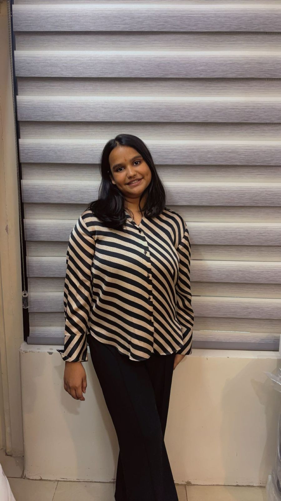

Focused on business strategy, entrepreneurship, and management fundamentals.

I am a college student pursuing a dual degree in B.Tech and BBA First year right now
I am a first-year college student pursuing a dual degree in B.Tech and BBA, combining my interests in technology and business. I am passionate about coding, startups, and exploring how innovative ideas can create real-world impact. Currently, I am developing my skills in Python and continuously learning about entrepreneurship and business strategies. I enjoy taking on new challenges and building practical knowledge through hands-on learning. Outside academics, I am interested in dancing and content creation, which help me stay creative and confident.
Focused on business strategy, entrepreneurship, and management fundamentals.
Building technical skills with a focus on programming and innovation.
Score: 90%
| Technical | Business & Leadership | Creative & Other |
|---|---|---|
| Python, HTML, CSS, Dataset Management | Entrepreneurship, Business Planning, Research, Teamwork | Content Creation, Presentation, Communication |
Dancing, Content Creation, Reading Books, Exploring Technology & Entrepreneurship
Email: adishri.bhattad@gmail.com